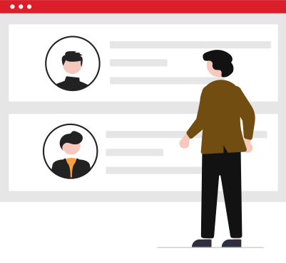

これまで創業者の目と経験
これから伝わる評価基準
感覚の中にある「大切にしてきたこと」を、誰もが理解できる言葉にします。

継ぐ育てる
創業者の経験と勘で育った会社には、言葉にしきれない強さがあります。一方で、世代が変わると、その強さだけでは評価の理由が伝わりにくくなることもあります。
アトツギナビは、地域性や職人気質、ベテラン社員との関係まで見つめながら、会社の大切な価値観を明確な基準へ。既存社員が納得し、次の世代も育つ制度を一緒につくります。
アトツギナビが大切にすること
制度だけを持ち込まず、これまで築かれた文化と人のつながりから設計を始めます。
感覚の中にある「大切にしてきたこと」を、誰もが理解できる言葉にします。
ベテラン社員との関係性に配慮し、現場が置き去りにならない進め方を考えます。
いまいる社員の成長を支え、組織の次の力につながる運用を目指します。
支援の考え方
人事評価制度は、完成した日がスタートです。設計から運用定着まで、会社の現在地に合わせて伴走します。
経営者の想い、地域性、職人気質を丁寧に整理し、評価の軸をつくります。
明確で現代的な基準へ落とし込み、社員が理解しやすい仕組みに整えます。
ベテラン社員との関係も見ながら、評価の伝え方や対話の進め方を支えます。
導入後も運用を確認し、制度が根づくまで継続してフォローします。
ご相談から定着まで
最初から答えが決まっている必要はありません。状況を伺い、納得できる進め方をご提案します。
まずは公式フォームから、気になっていることをお聞かせください。
会社の背景や組織の状況、受け継ぎたい価値観を伺います。
伺った内容をもとに、制度の方向性と進め方をご提案します。
内容をご確認いただいたうえで契約し、制度を具体化します。
実際の運用を見ながら、組織に根づくよう継続して支えます。
ご相談前に
はい。承継前の段階から、今後の組織づくりを見据えてご相談いただけます。
はい。組織の規模や現在の体制を伺い、それぞれの状況に合わせて進め方を考えます。
はい。長く会社を支えてきた方との関係性や現場の受け止め方に配慮しながら設計・運用を進めます。
はい。制度の構築後も、実際の運用と定着に向けたフォローを行います。
まずは、いまのお悩みから
下から近いものを選ぶと、相談テーマを確認できます。このページでは情報を送信しません。公式フォームへ移動した後に、内容をご入力ください。